這篇 codelab 想藉由 NYC Citibike 資料，介紹簡單好入門的 SQL 運算，因此需要使用到 NYC Citibike 資料，可以先進入 NYC Citibike 網站下載資料。
NYC Citibike 網站：
https://ride.citibikenyc.com/system-data
以下會介紹：
Schema → +New → Material View → Choose Language → Edit in Notebook
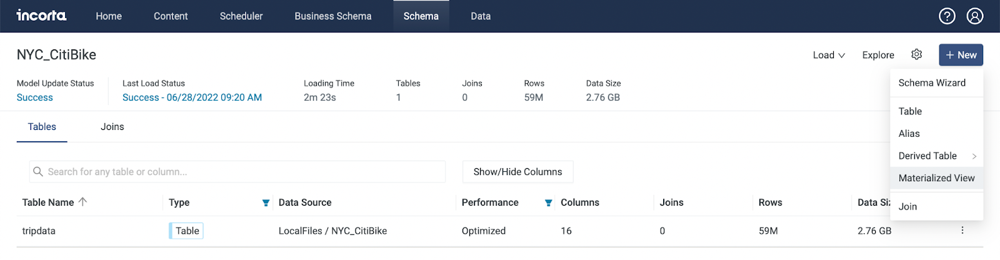
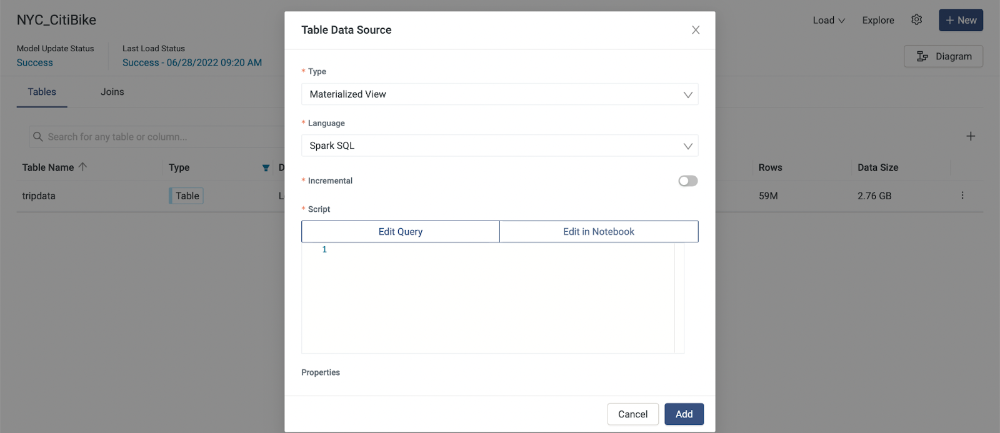
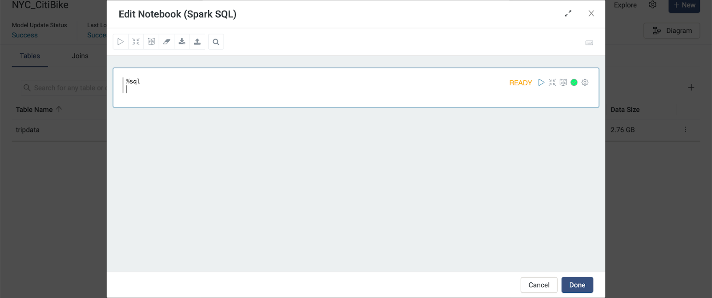
SELECT * FROM [table name]
* 代表所有資料
SELECT * FROM NYC_CitiBike.tripdata 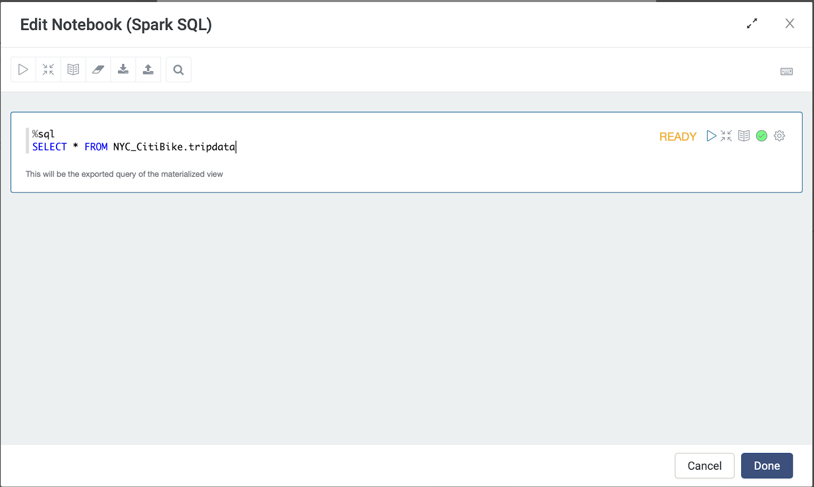
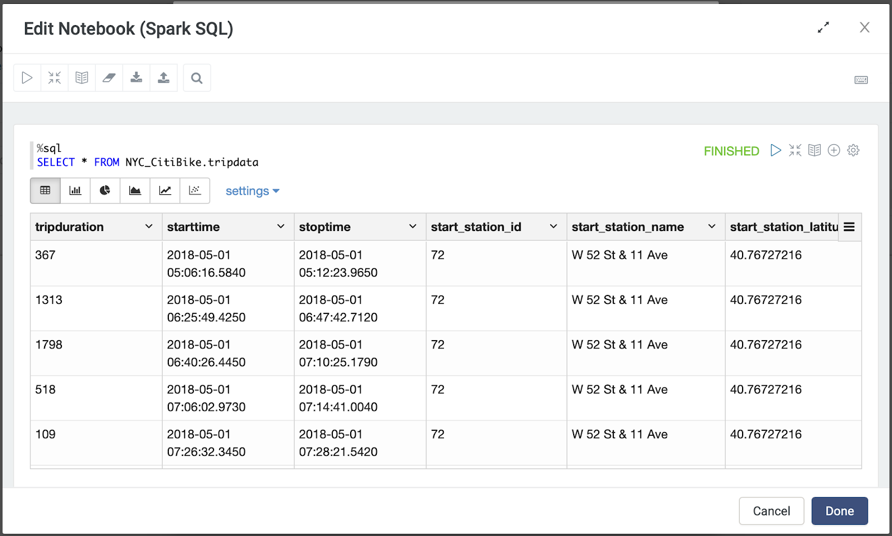
LIMIT n
僅查看 n 筆資料，可以減少系統的運算時間
SELECT * FROM NYC_CitiBike.tripdata LIMIT 10 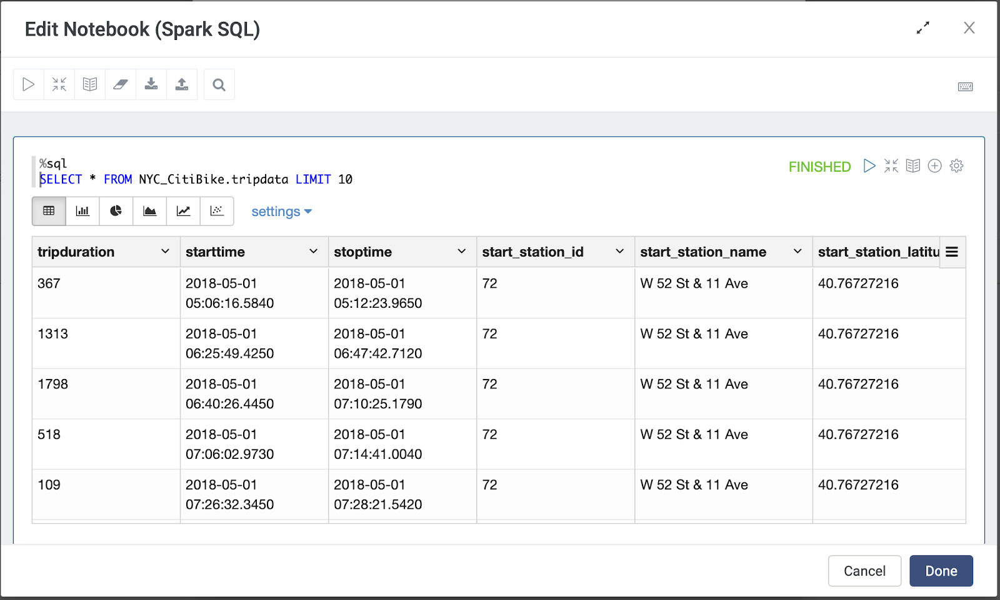
DESC [table name]
查看 column name 或是 data type，藉由查看資料結構，可以大概了解資料型態，並且對於後續分析也有些幫助。
DESC NYC_CitiBike.tripdata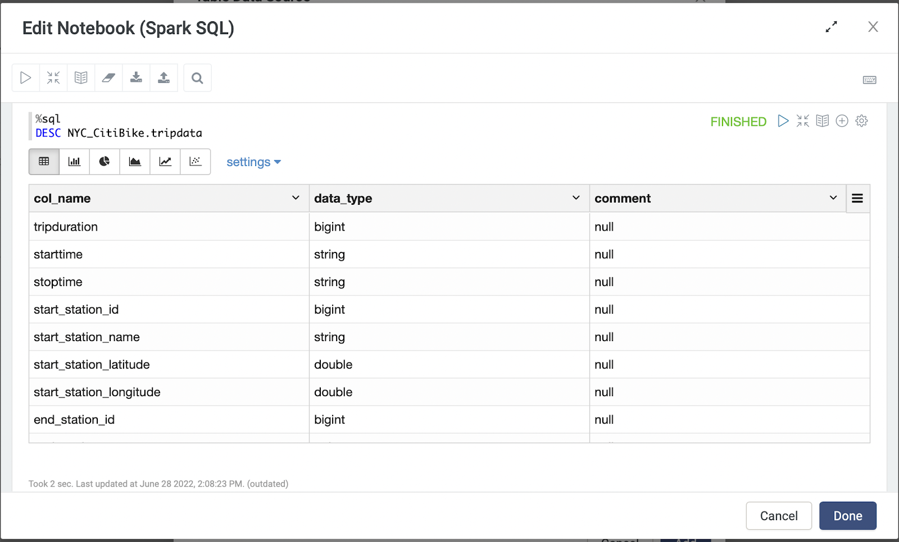
SELECT column1, column2 FROM [table name]
選用 [欄位column] - 學理上叫 projection，刪掉一些不需要的column，排列不同的次序，僅留下需要的欄位
SELECT start_station_name, end_station_name
FROM NYC_CitiBike.tripdata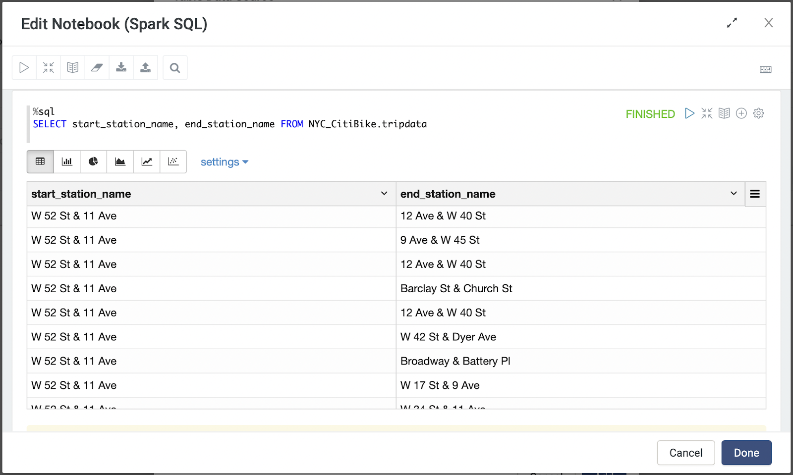
SELECT starttime, stoptime, tripduration
FROM NYC_CitiBike.tripdata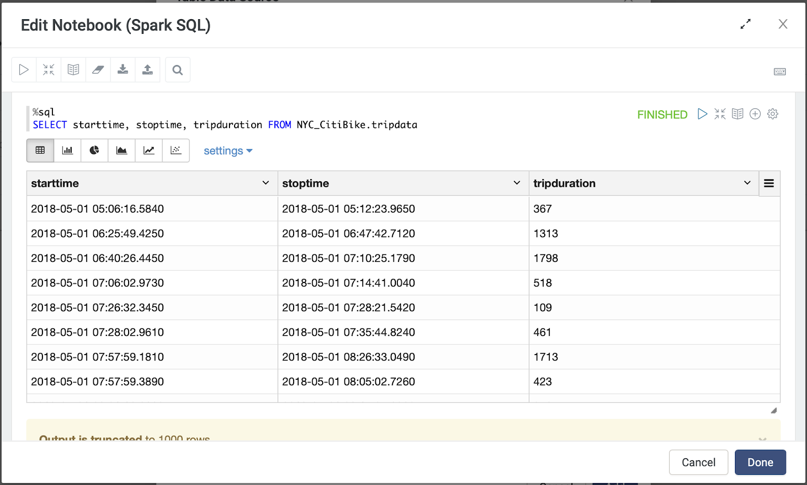
order by [DESC/ ASC]
SELECT starttime, stoptime
FROM NYC_CitiBike.tripdata
order by 1, 2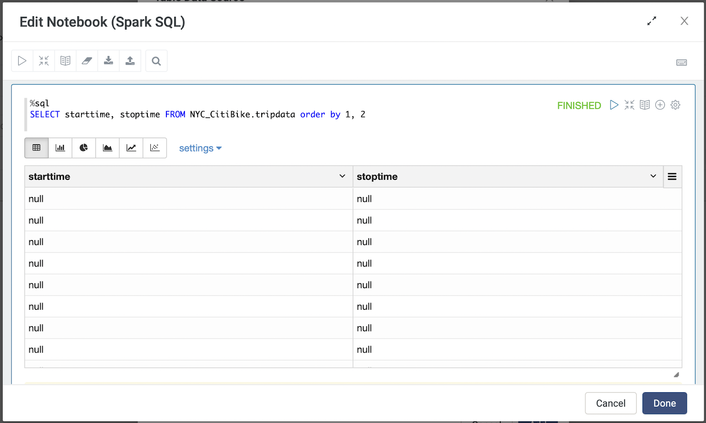
SELECT tripduration
FROM NYC_CitiBike.tripdata
order by tripduration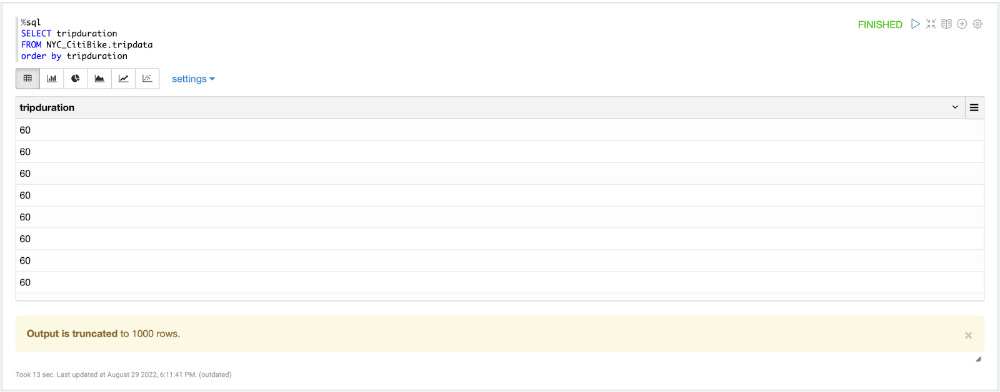
SELECT tripduration
FROM NYC_CitiBike.tripdata
order by tripduration DESC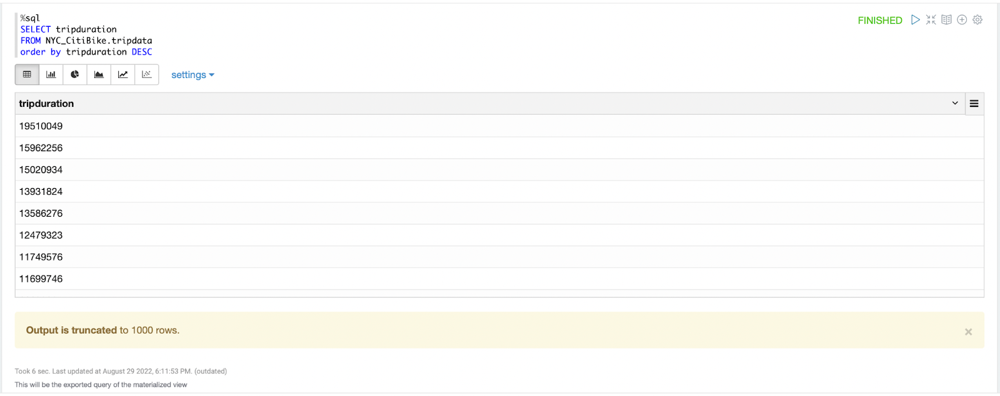
SELECT DISTINCT start_station_name, end_station_name, COUNT(*)
FROM NYC_CitiBike.tripdata
where start_station_name is not null
GROUP BY start_station_name, end_station_name
ORDER BY COUNT(*) DESC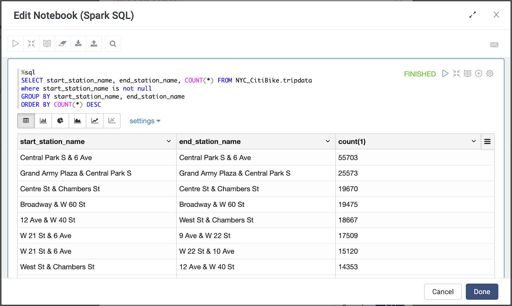
WHERE [column name] IS NOT NULL
去除資料的空值，將缺少的資料去除以利計算
SELECT start_station_name, end_station_name
FROM NYC_CitiBike.tripdata
where start_station_name is not null
ORDER 1,2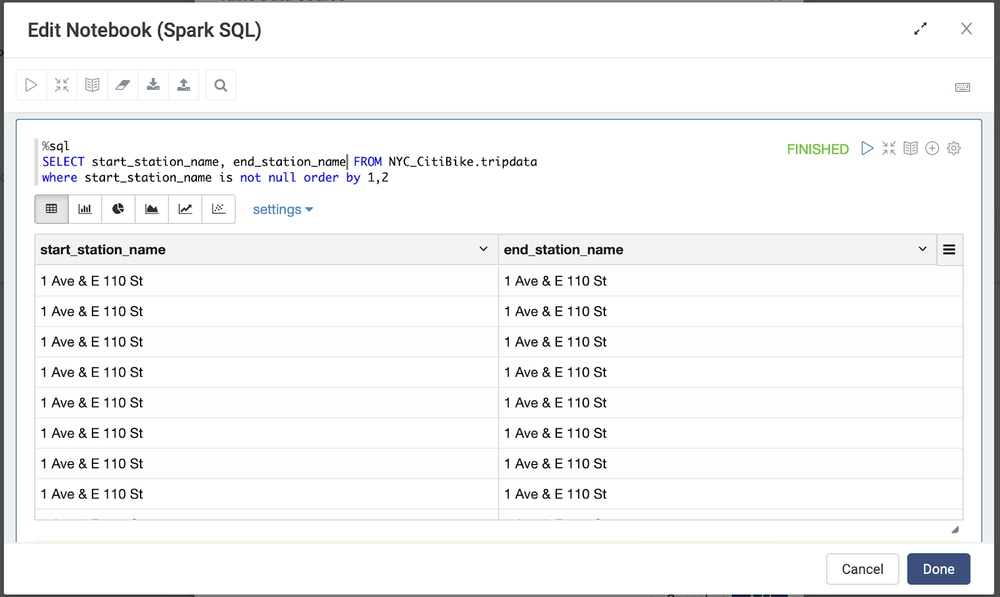
DISTINCT
重複出現的數值或資料，讓他僅出現一次
SELECT DISTINCT start_station_name, end_station_name
FROM NYC_CitiBike.tripdata
where start_station_name is not null
ORDER BY 1,2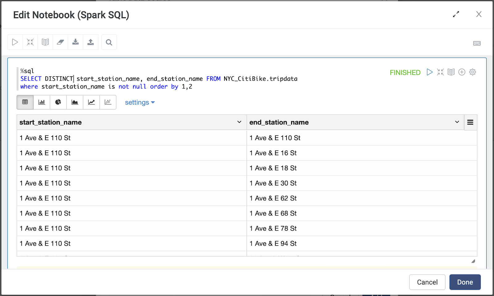
COUNT( )
可以利用 COUNT( ) 計算次數，算出所需資料的筆數，搭配 DISTINCT 還可以計算有多少不同的分類或是種類等等
SELECT COUNT(*) FROM NYC_CitiBike.tripdata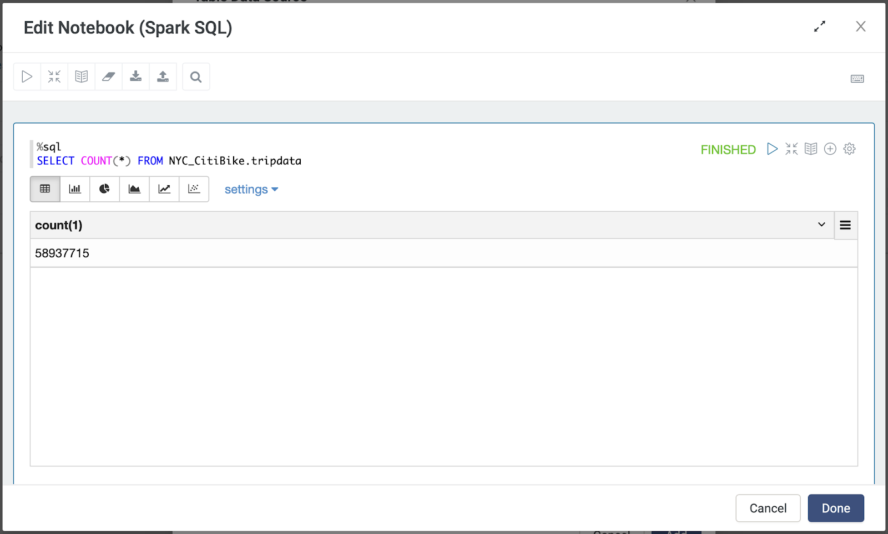
SELECT COUNT(DISTINCT start_station_id)
FROM NYC_CitiBike.tripdata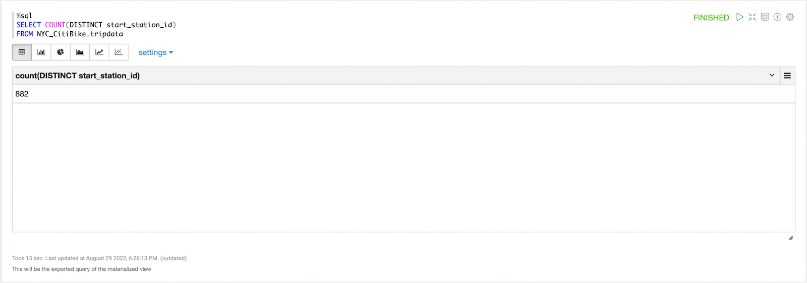
GROUP BY
當有任何 aggregation column (聚合函數)時，必須要用 GROUP BY ，除了aggregation column 其他 column 都要放進 GROUP BY
SELECT DISTINCT start_station_name, end_station_name, COUNT(*)
FROM NYC_CitiBike.tripdata
where start_station_name is not null
GROUP BY start_station_name, end_station_name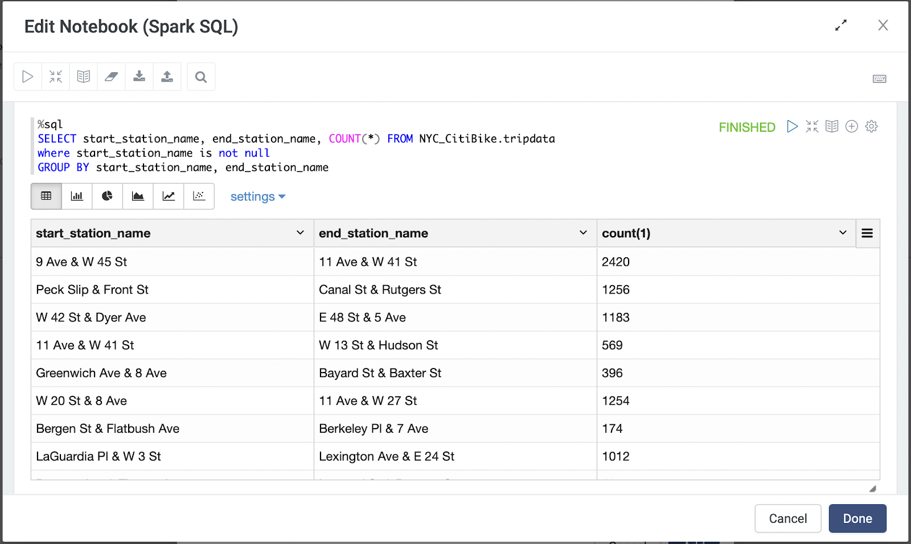
SELECT DISTINCT start_station_name, end_station_name, COUNT(*)
FROM NYC_CitiBike.tripdata
where start_station_name is not null
GROUP BY start_station_name, end_station_name
ORDER BY COUNT(*) DESC